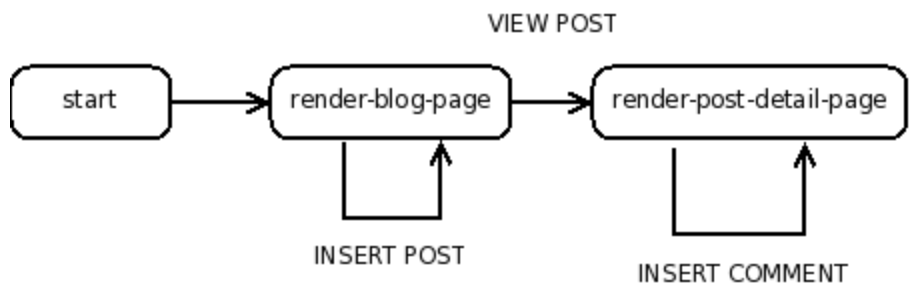
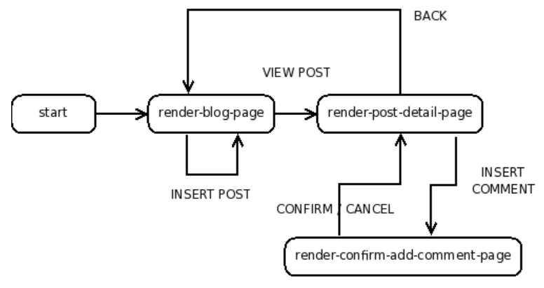

Created: 2024-05-15 mié 15:56
Introduzca las siguientes lineas de código. Y ejecute en el REPL
#lang web-server/insta
(define (start request)
(response/xexpr
'(html
(head (title "My Blog"))
(body (h1 "Under construction")))))
En éste tutorial se muesta cómo desarrollar un Blog. Usuarios del Blog deberían ser capaz de crear nuevas Publicaciones y agregar comentarios a las publicaciones existentes. Mostraremos el desarrollo incrementalmente. Realizando las siguientes tareas:
Necesitamos una estructura de datos para representar el BLOG
(struct post (title body))
(define BLOG (list (post "First Post!"
"Hey, this is my first post!")))
racket usa la función response/xexpr que toma una X-epression
para representar una expresión en HTML.
<p>This is an example</p>
es representado por
'(p "This is an example").
Otro ejemplo
p>This is <div class="emph">another</div> example.</p>
es representado por
'(p "This is " (div ((class "emph")) "another") " example.").
X-expression(list 'html (list 'head (list 'title "Some title"))
(list 'body (list 'p "This is a simple static page.")))
'(html (head (title "Some title"))
(body (p "This is a simple static page.")))
Para evaluar expresiones se usa ",("
; render-greeting: string -> response
; Consumes a name, and produces a dynamic response.
(define (render-greeting a-name)
(response/xexpr
`(html (head (title "Welcome"))
(body (p ,(string-append "Hello " a-name))))))
unquote-splicing : ",@"'(ul (li "Larry")
(li "Curly")
(li "Moe"))
de una lista, entonces
`(ul ,@'((li "Larry") (li "Curly") (li "Moe")))
ejemplo
; render-as-itemized-list: (listof xexpr) -> xexpr
; Consumes a list of items, and produces a rendering
; as an unordered list.
(define (render-as-itemized-list fragments)
`(ul ,@(map render-as-item fragments)))
; render-as-item: xexpr -> xexpr
; Consumes an xexpr, and produces a rendering
; as a list item.
(define (render-as-item a-fragment)
`(li ,a-fragment))
otro ejemplo, una función render-posts que
(render-posts empty)
produce
'(div ((class "posts")))
y
(render-posts (list (post "Post 1" "Body 1")
(post "Post 2" "Body 2")))
que produce
'(div ((class "posts"))
(div ((class "post")) "Post 1" (p "Body 1"))
(div ((class "post")) "Post 2" (p "Body 2")))
request-bindingsextract-binding/singleexists-binding?send/suspend/dispatchenviar/suspender/enviar, nos permite crear URL que
dirigen las solicitudes dirigidas a ellas a funciones específicas
en nuestra aplicación. Permite implementar manejadores "handlers"#lang web-server/insta
; start: request -> response
(define (start request)
(phase-1 request))
; phase-1: request -> response
(define (phase-1 request)
(define (response-generator embed/url)
(response/xexpr
`(html
(body (h1 "Phase 1")
(a ((href ,(embed/url phase-2)))
"click me!")))))
(send/suspend/dispatch response-generator))
; phase-2: request -> response
(define (phase-2 request)
(define (response-generator embed/url)
(response/xexpr
`(html
(body (h1 "Phase 2")
(a ((href ,(embed/url phase-1)))
"click me!")))))
(send/suspend/dispatch response-generator))
#lang web-server/insta
; start: request -> response
(define (start request)
(show-counter 0 request))
; show-counter: number request -> doesn't return
; Displays a number that's hyperlinked: when the link is pressed,
; returns a new page with the incremented number.
(define (show-counter n request)
(define (response-generator embed/url)
(response/xexpr
`(html (head (title "Counting example"))
(body
(a ((href ,(embed/url next-number-handler)))
,(number->string n))))))
(define (next-number-handler request)
(show-counter (+ n 1) request))
(send/suspend/dispatch response-generator))
#lang web-server/insta
; A blog is a (listof post)
; and a post is a (post title body)
(struct post (title body))
; BLOG: blog
; The static blog.
(define BLOG
(list (post "Second Post" "This is another post")
(post "First Post" "This is my first post")))
; start: request -> doesn't return
; Consumes a request and produces a page that displays all of the
; web content.
(define (start request)
(render-blog-page BLOG request))
; parse-post: bindings -> post
; Extracts a post out of the bindings.
(define (parse-post bindings)
(post (extract-binding/single 'title bindings)
(extract-binding/single 'body bindings)))
; render-blog-page: blog request -> doesn't return
; Consumes a blog and a request, and produces an HTML page
; of the content of the blog.
(define (render-blog-page a-blog request)
(define (response-generator embed/url)
(response/xexpr
`(html (head (title "My Blog"))
(body
(h1 "My Blog")
,(render-posts a-blog)
(form ((action
,(embed/url insert-post-handler)))
(input ((name "title")))
(input ((name "body")))
(input ((type "submit"))))))))
(define (insert-post-handler request)
(render-blog-page
(cons (parse-post (request-bindings request))
a-blog)
request))
(send/suspend/dispatch response-generator))
; render-post: post -> xexpr
; Consumes a post, produces an xexpr fragment of the post.
(define (render-post a-post)
`(div ((class "post"))
,(post-title a-post)
(p ,(post-body a-post))))
; render-posts: blog -> xexpr
; Consumes a blog, produces an xexpr fragment
; of all its posts.
(define (render-posts a-blog)
`(div ((class "posts"))
,@(map render-post a-blog)))
(struct blog (posts))
por
(struct blog (posts) #:mutable)
set-blog-post! y blog-insert-post!#lang web-server/insta
; A blog is a (blog posts)
; where posts is a (listof post)
(struct blog (posts) #:mutable)
; and post is a (post title body)
; where title is a string, and body is a string
(struct post (title body))
; BLOG: blog
; The initial BLOG.
(define BLOG
(blog
(list (post "Second Post" "This is another post")
(post "First Post" "This is my first post"))))
; blog-insert-post!: blog post -> void
; Consumes a blog and a post, adds the post at the top of the blog.
(define (blog-insert-post! a-blog a-post)
(set-blog-posts! a-blog
(cons a-post (blog-posts a-blog))))
; start: request -> doesn't return
; Consumes a request and produces a page that displays
; all of the web content.
(define (start request)
(render-blog-page request))
; parse-post: bindings -> post
; Extracts a post out of the bindings.
(define (parse-post bindings)
(post (extract-binding/single 'title bindings)
(extract-binding/single 'body bindings)))
; render-blog-page: request -> doesn't return
; Produces an HTML page of the content of the BLOG.
(define (render-blog-page request)
(define (response-generator embed/url)
(response/xexpr
`(html (head (title "My Blog"))
(body
(h1 "My Blog")
,(render-posts)
(form ((action
,(embed/url insert-post-handler)))
(input ((name "title")))
(input ((name "body")))
(input ((type "submit"))))))))
(define (insert-post-handler request)
(blog-insert-post!
BLOG (parse-post (request-bindings request)))
(render-blog-page request))
(send/suspend/dispatch response-generator))
; render-post: post -> xexpr
; Consumes a post, produces an xexpr fragment of the post.
(define (render-post a-post)
`(div ((class "post"))
,(post-title a-post)
(p ,(post-body a-post))))
; render-posts: -> xexpr
; Consumes a blog, produces an xexpr fragment
; of all its posts.
(define (render-posts)
`(div ((class "posts"))
,@(map render-post (blog-posts BLOG))))
(struct post (title body comments) #:mutable)

#lang web-server/insta
; A blog is a (blog posts)
; where posts is a (listof post)
(struct blog (posts) #:mutable)
; and post is a (post title body comments)
; where title is a string, body is a string,
; and comments is a (listof string)
(struct post (title body comments) #:mutable)
; BLOG: blog
; The initial BLOG.
(define BLOG
(blog
(list (post "Second Post"
"This is another post"
(list))
(post "First Post"
"This is my first post"
(list "First comment!")))))
; blog-insert-post!: blog post -> void
; Consumes a blog and a post, adds the post at the top of the blog.
(define (blog-insert-post! a-blog a-post)
(set-blog-posts! a-blog
(cons a-post (blog-posts a-blog))))
; post-insert-comment!: post string -> void
; Consumes a post and a comment string. As a side-effect,
; adds the comment to the bottom of the post's list of comments.
(define (post-insert-comment! a-post a-comment)
(set-post-comments!
a-post
(append (post-comments a-post) (list a-comment))))
; start: request -> doesn't return
; Consumes a request, and produces a page that displays
; all of the web content.
(define (start request)
(render-blog-page request))
; render-blog-page: request -> doesn't return
; Produces an HTML page of the content of the
; BLOG.
(define (render-blog-page request)
(define (response-generator embed/url)
(response/xexpr
`(html (head (title "My Blog"))
(body
(h1 "My Blog")
,(render-posts embed/url)
(form ((action
,(embed/url insert-post-handler)))
(input ((name "title")))
(input ((name "body")))
(input ((type "submit"))))))))
; parse-post: bindings -> post
; Extracts a post out of the bindings.
(define (parse-post bindings)
(post (extract-binding/single 'title bindings)
(extract-binding/single 'body bindings)
(list)))
(define (insert-post-handler request)
(blog-insert-post!
BLOG (parse-post (request-bindings request)))
(render-blog-page request))
(send/suspend/dispatch response-generator))
; render-post-detail-page: post request -> doesn't return
; Consumes a post and request, and produces a detail page
; of the post. The user will be able to insert new comments.
(define (render-post-detail-page a-post request)
(define (response-generator embed/url)
(response/xexpr
`(html (head (title "Post Details"))
(body
(h1 "Post Details")
(h2 ,(post-title a-post))
(p ,(post-body a-post))
,(render-as-itemized-list
(post-comments a-post))
(form ((action
,(embed/url insert-comment-handler)))
(input ((name "comment")))
(input ((type "submit"))))))))
(define (parse-comment bindings)
(extract-binding/single 'comment bindings))
(define (insert-comment-handler a-request)
(post-insert-comment!
a-post (parse-comment (request-bindings a-request)))
(render-post-detail-page a-post a-request))
(send/suspend/dispatch response-generator))
; render-post: post (handler -> string) -> xexpr
; Consumes a post, produces an xexpr fragment of the post.
; The fragment contains a link to show a detailed view of the post.
(define (render-post a-post embed/url)
(define (view-post-handler request)
(render-post-detail-page a-post request))
`(div ((class "post"))
(a ((href ,(embed/url view-post-handler)))
,(post-title a-post))
(p ,(post-body a-post))
(div ,(number->string (length (post-comments a-post)))
" comment(s)")))
; render-posts: (handler -> string) -> xexpr
; Consumes a embed/url, and produces an xexpr fragment
; of all its posts.
(define (render-posts embed/url)
(define (render-post/embed/url a-post)
(render-post a-post embed/url))
`(div ((class "posts"))
,@(map render-post/embed/url (blog-posts BLOG))))
; render-as-itemized-list: (listof xexpr) -> xexpr
; Consumes a list of items, and produces a rendering as
; an unorderered list.
(define (render-as-itemized-list fragments)
`(ul ,@(map render-as-item fragments)))
; render-as-item: xexpr -> xexpr
; Consumes an xexpr, and produces a rendering
; as a list item.
(define (render-as-item a-fragment)
`(li ,a-fragment))

#lang web-server/insta
; A blog is a (blog posts)
; where posts is a (listof post)
(struct blog (posts) #:mutable)
; and post is a (post title body comments)
; where title is a string, body is a string,
; and comments is a (listof string)
(struct post (title body comments) #:mutable)
; BLOG: blog
; The initial BLOG.
(define BLOG
(blog
(list (post "Second Post"
"This is another post"
(list))
(post "First Post"
"This is my first post"
(list "First comment!")))))
; blog-insert-post!: blog post -> void
; Consumes a blog and a post, adds the post at the top of the blog.
(define (blog-insert-post! a-blog a-post)
(set-blog-posts! a-blog
(cons a-post (blog-posts a-blog))))
; post-insert-comment!: post string -> void
; Consumes a post and a comment string. As a side-efect,
; adds the comment to the bottom of the post's list of comments.
(define (post-insert-comment! a-post a-comment)
(set-post-comments!
a-post
(append (post-comments a-post) (list a-comment))))
; start: request -> doesn't return
; Consumes a request and produces a page that displays
; all of the web content.
(define (start request)
(render-blog-page request))
; render-blog-page: request -> doesn't return
; Produces an HTML page of the content of the
; BLOG.
(define (render-blog-page request)
(define (response-generator embed/url)
(response/xexpr
`(html (head (title "My Blog"))
(body
(h1 "My Blog")
,(render-posts embed/url)
(form ((action
,(embed/url insert-post-handler)))
(input ((name "title")))
(input ((name "body")))
(input ((type "submit"))))))))
; parse-post: bindings -> post
; Extracts a post out of the bindings.
(define (parse-post bindings)
(post (extract-binding/single 'title bindings)
(extract-binding/single 'body bindings)
(list)))
(define (insert-post-handler request)
(blog-insert-post!
BLOG (parse-post (request-bindings request)))
(render-blog-page request))
(send/suspend/dispatch response-generator))
; render-post-detail-page: post request -> doesn't return
; Consumes a post and produces a detail page of the post.
; The user will be able to either insert new comments
; or go back to render-blog-page.
(define (render-post-detail-page a-post request)
(define (response-generator embed/url)
(response/xexpr
`(html (head (title "Post Details"))
(body
(h1 "Post Details")
(h2 ,(post-title a-post))
(p ,(post-body a-post))
,(render-as-itemized-list
(post-comments a-post))
(form ((action
,(embed/url insert-comment-handler)))
(input ((name "comment")))
(input ((type "submit"))))
(a ((href ,(embed/url back-handler)))
"Back to the blog")))))
(define (parse-comment bindings)
(extract-binding/single 'comment bindings))
(define (insert-comment-handler request)
(render-confirm-add-comment-page
(parse-comment (request-bindings request))
a-post
request))
(define (back-handler request)
(render-blog-page request))
(send/suspend/dispatch response-generator))
; render-confirm-add-comment-page :
; comment post request -> doesn't return
; Consumes a comment that we intend to add to a post, as well
; as the request. If the user follows through, adds a comment
; and goes back to the display page. Otherwise, goes back to
; the detail page of the post.
(define (render-confirm-add-comment-page a-comment a-post request)
(define (response-generator embed/url)
(response/xexpr
`(html (head (title "Add a Comment"))
(body
(h1 "Add a Comment")
"The comment: " (div (p ,a-comment))
"will be added to "
(div ,(post-title a-post))
(p (a ((href ,(embed/url yes-handler)))
"Yes, add the comment."))
(p (a ((href ,(embed/url cancel-handler)))
"No, I changed my mind!"))))))
(define (yes-handler request)
(post-insert-comment! a-post a-comment)
(render-post-detail-page a-post request))
(define (cancel-handler request)
(render-post-detail-page a-post request))
(send/suspend/dispatch response-generator))
; render-post: post (handler -> string) -> xexpr
; Consumes a post, produces an xexpr fragment of the post.
; The fragment contains a link to show a detailed view of the post.
(define (render-post a-post embed/url)
(define (view-post-handler request)
(render-post-detail-page a-post request))
`(div ((class "post"))
(a ((href ,(embed/url view-post-handler)))
,(post-title a-post))
(p ,(post-body a-post))
(div ,(number->string (length (post-comments a-post)))
" comment(s)")))
; render-posts: (handler -> string) -> xexpr
; Consumes a embed/url, produces an xexpr fragment
; of all its posts.
(define (render-posts embed/url)
(define (render-post/embed/url a-post)
(render-post a-post embed/url))
`(div ((class "posts"))
,@(map render-post/embed/url (blog-posts BLOG))))
; render-as-itemized-list: (listof xexpr) -> xexpr
; Consumes a list of items, and produces a rendering as
; an unorderered list.
(define (render-as-itemized-list fragments)
`(ul ,@(map render-as-item fragments)))
; render-as-item: xexpr -> xexpr
; Consumes an xexpr, and produces a rendering
; as a list item.
(define (render-as-item a-fragment)
`(li ,a-fragment))
static-files-path#lang web-server/insta
(define (start request)
(response/xexpr
'(html (head (title "Testing")
(link ((rel "stylesheet")
(href "/test-static.css")
(type "text/css"))))
(body (h1 "Testing")
(h2 "This is a header")
(p "This is " (span ((class "hot")) "hot") ".")))))
(static-files-path "htdocs")
body {
margin-left: 10%;
margin-right: 10%;
}
p { font-family: sans-serif }
h1 { color: green }
h2 { font-size: small }
span.hot { color: red }
(struct blog (posts) #:mutable #:prefab)
; initialize-blog! : path? -> blog
; Reads a blog from a path, if not present, returns default
(define (initialize-blog! home)
(define (log-missing-exn-handler exn)
(blog
(path->string home)
(list (post "First Post"
"This is my first post"
(list "First comment!"))
(post "Second Post"
"This is another post"
(list)))))
(define the-blog
(with-handlers ([exn? log-missing-exn-handler])
(with-input-from-file home read)))
(set-blog-home! the-blog (path->string home))
the-blog)
; save-blog! : blog -> void
; Saves the contents of a blog to its home
(define (save-blog! a-blog)
(define (write-to-blog)
(write a-blog))
(with-output-to-file (blog-home a-blog)
write-to-blog
#:exists 'replace))